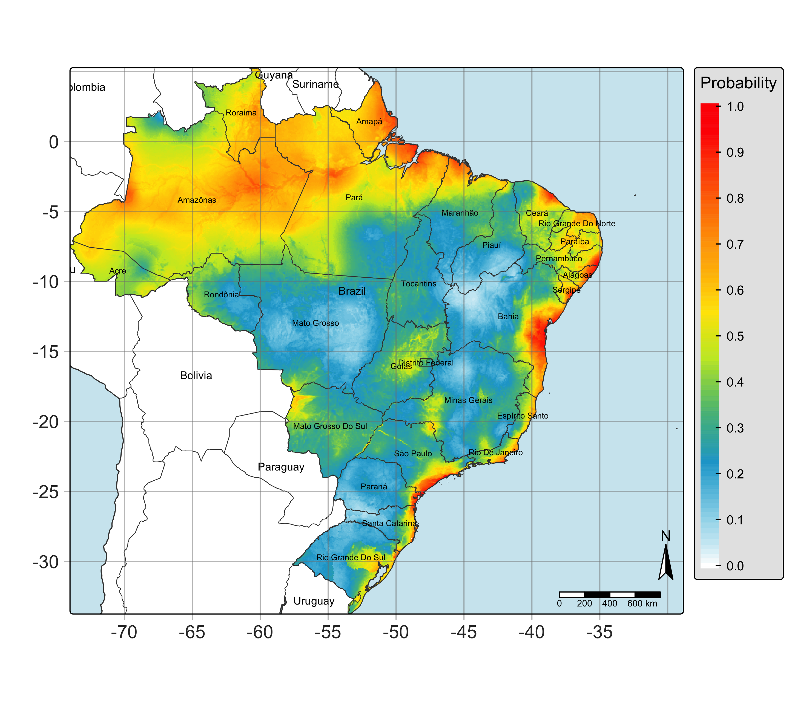

CAPÍTULO 12 · A → M · diagnóstico e retorno
O primeiro resultado muda a conversa
Resultados preliminares são uma oportunidade de formular verificações, sem inventar certezas.
Base no curso: slides 372–379; 390; 410.
Na primeira reunião de resultados, a equipe projeta uma figura do curso para ensaiar sua leitura. “Há áreas com valores altos, mas ainda precisamos conferir os registros e a transferência.” O mapa deixa de ser uma resposta final e vira uma lista de perguntas verificáveis.

Como ler sem extrapolar a evidência
Primeiro, identifique espécie, período, domínio de ajuste, extensão da projeção e escala da legenda. Depois, localize registros e áreas sem observações. Pergunte se os extremos de adequabilidade coincidem com gradientes esperados e se há fronteiras abruptas compatíveis com as camadas. A interpretação numérica depende da configuração que gerou a figura.
O arquivo do PowerPoint contém figuras de demonstração, mas sua presença no slide não fornece todos os dados por partição ou todos os objetos ajustados. Para o livro, não foi executado o workflow ecológico nem auditado um diretório de resultados correspondente a cada figura. Por isso não são apresentados novos valores de desempenho, áreas ou perdas climáticas.
Um quadro de preliminares que a equipe pode preencher
| Produto | O que verificar | Estado neste livro |
|---|---|---|
| Ocorrências finais | Número, exclusões, cobertura e fontes. | Procedimento documentado; números de uma nova execução não calculados. |
| Avaliação espacial | Valores por partição e uso dessas partições na seleção. | Código e limitações descritos; métricas novas não calculadas. |
| Mapa contínuo | Padrões, escala, NA e domínio de aplicação. | Figura de exemplo dos slides. |
| Projeções futuras | Cenário, período, GCMs, extrapolação e dispersão. | Configuração lida no script; novas projeções não geradas. |
Do padrão à verificação
Se uma área conhecida recebe valor baixo, confira a procedência do registro, o período, o raster e a cobertura ambiental antes de mudar o limiar. Se um ambiente sem registros recebe valor alto, considere falta de amostragem, inacessibilidade ou restrições não representadas. Essa área pode orientar coleta; não deve ser declarada ocupada apenas por causa do modelo.
# Depois de executar o ajuste no projeto de modelagem:
performance.models <- flexsdm::sdm_summarize(list.models)
print(performance.models)
print(best.models)
print(names(predictors.model))Tarefa
Escreva três observações do mapa sem atribuir causas. Depois formule duas hipóteses explicativas e um dado que permitiria confrontar cada uma.